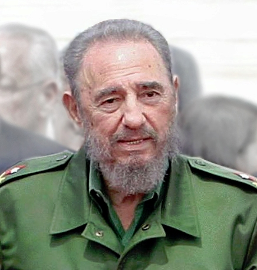

Fidel Castro

Fidel Alejandro Castro Ruz was a Cuban revolutionary and politician who served as Prime Minister of Cuba from 1959 to 1976 and President from 1976 to 2008. Ideologically a Marxist-Leninist and Cuban nationalist, he also served as the First Secretary of the Communist Party of Cuba from 1961 until 2011.